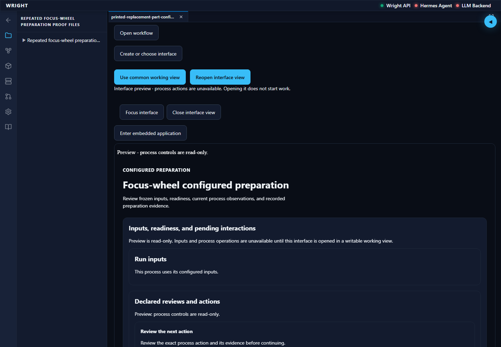
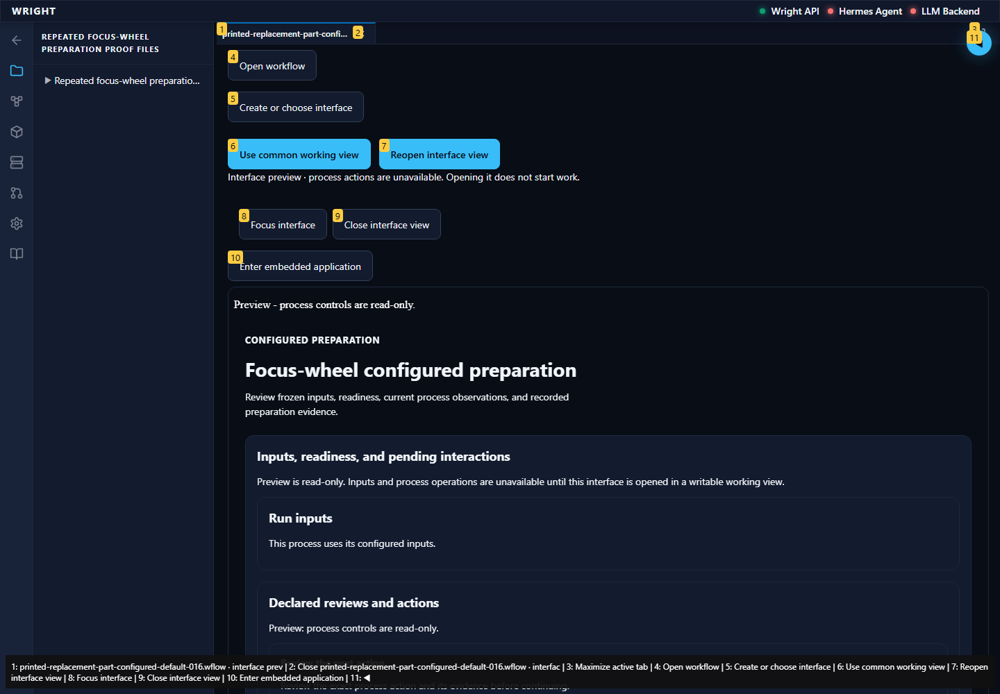
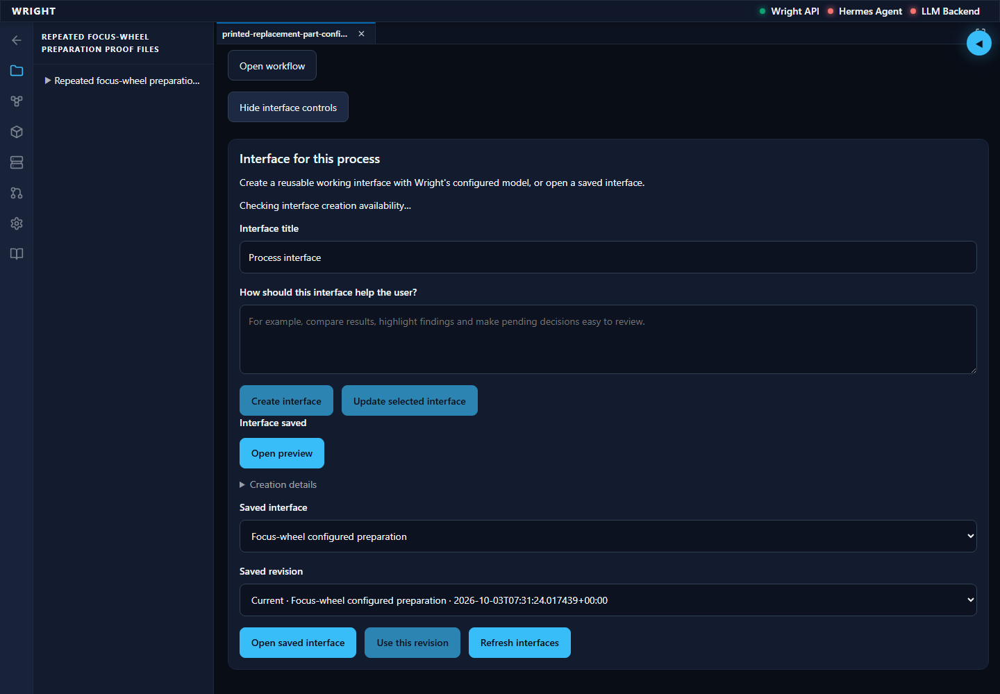
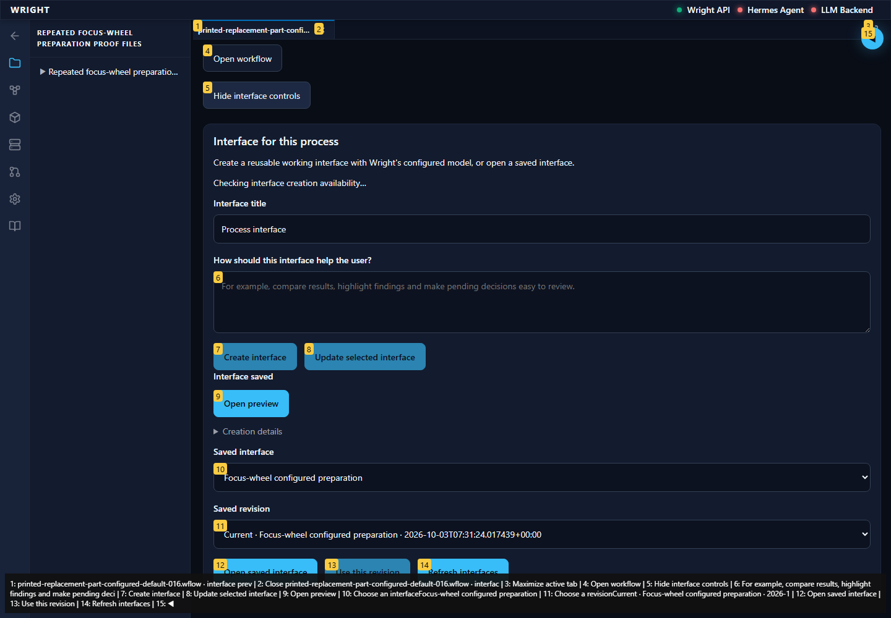
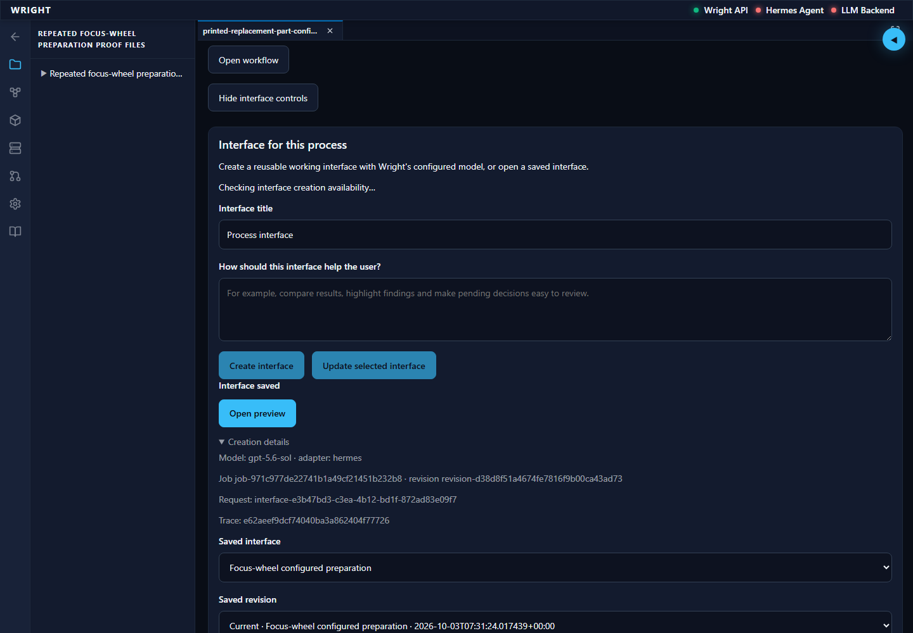
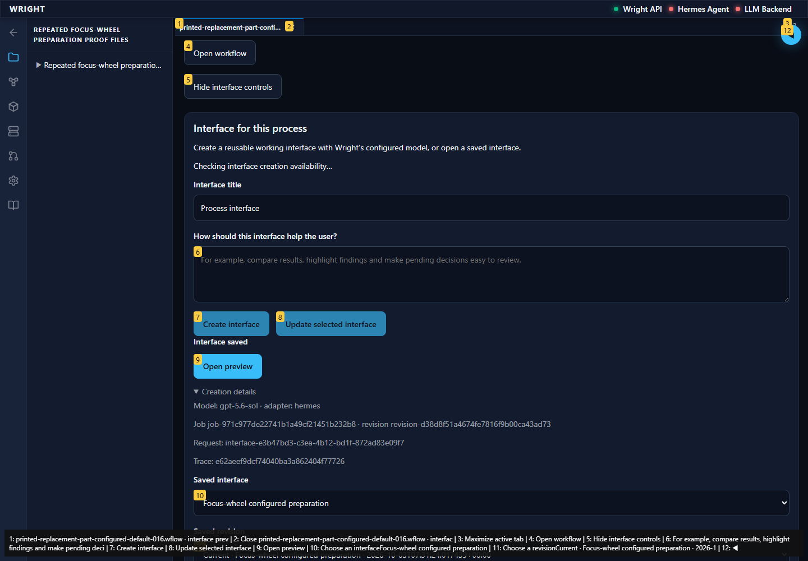

Normal Wright workspace and actual isolated engineering run. No mocked routes or physical action.
Status: pass
The saved preview retains the same exact engineering results.
Expected: Read-only preview on the same run and revision.
Actual: The read-only preview opens with all 20 exact output identities.
raw 
annotated 
Technical identities remain optional in the normal working interface.
Expected: Saved job with collapsed diagnostics.
Actual: The actual saved job is restored and Creation details is collapsed.
raw 
annotated 
The expanded details show the original model, job, revision, request and trace.
Expected: All exact identity text inside the visible viewport.
Actual: The complete diagnostics fit in the viewport and all identities match the original actual-model authoring record.
raw 
annotated 